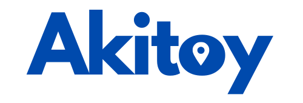

Conectando emprendedores salvadoreños con el mundo
Explorar EmprendimientosAKITOY es una plataforma digital creada con orgullo por manos salvadoreñas, pensada exclusivamente para apoyar a los emprendedores de nuestro país. Aquí, los salvadoreños pueden registrar sus proyectos, productos o servicios, mientras que personas de El Salvador o de cualquier parte del mundo pueden descubrirlos, adquirirlos y difundirlos. Nuestra meta es ser un puente entre el talento local y el mundo, fomentando el consumo de productos 100% salvadoreños y fortaleciendo la economía nacional.
Impulsar a los emprendedores salvadoreños, brindándoles un espacio digital moderno, accesible y seguro para mostrar sus productos y servicios al mundo. Queremos que cada compra realizada en la plataforma sea un paso más hacia el crecimiento económico de las familias salvadoreñas y el fortalecimiento de nuestra identidad cultural.
Convertirnos en la plataforma digital líder de El Salvador para el comercio y promoción de productos locales, reconocida internacionalmente por su compromiso con el emprendimiento, la innovación y el desarrollo económico sostenible. Aspiramos a que cada emprendedor salvadoreño tenga las herramientas necesarias para competir y destacar en el mercado global.